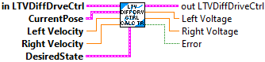

Returns true if the pose error is within tolerance of the reference.
Inputs:
- LTV Diff Drive Ctrl -- Controller data cluster
Outputs:
- At Reference -- True if the pose error is within tolerance of the reference.

Returns the left and right output voltages of the LTV controller.
The reference pose, linear velocity, and angular velocity should come from a drivetrain trajectory.
Inputs:
- in LTV Dif Drive Ctrl -- Controller data cluster.
- currentPose -- The current pose.
- leftVelocity -- The current left velocity in meters per second.
- rightVelocity -- The current right velocity in meters per second.
- poseRef -- The desired pose.
- leftVelocityRef -- The desired left velocity in meters per second.
- rightVelocityRef -- The desired right velocity in meters per second.
Outputs:
- out LTV Dif Drive Ctrl -- Updated controller data cluster.
- Left Voltage -- Left wheel output voltages of the LTV controller.
- Right Voltage -- Right wheel output voltages of the LTV controller.
- Error -- Returns TRUE if an error occured.

Returns the left and right output voltages of the LTV controller.
The reference pose, linear velocity, and angular velocity should come from a drivetrain trajectory.
Inputs:
- in LTV Dif Drive Ctrl -- Controller data cluster.
- currentPose -- The current pose.
- leftVelocity -- The current left velocity in meters per second.
- rightVelocity -- The current right velocity in meters per second.
- desiredState -- The desired pose, linear velocity, and angular velocity from a trajectory.
Outputs:
- out LTV Dif Drive Ctrl -- Updated controller data cluster.
- Left Voltage -- Left wheel output voltages of the LTV controller.
- Right Voltage -- Right wheel output voltages of the LTV controller.
- Error -- Returns TRUE if an error occured.

The linear time-varying (LTV) differential drive controller has a similar form to the LQR, but the model used to compute the controller gain is the nonlinear model linearized around the drivetrain's current state. We precomputed gains for important places in our state-space, then interpolated between them with a LUT to save computational resources.Filters the provided voltages to limit a differential drive's linear and angular acceleration.
Constructs a linear time-varying differential drive controller.
Inputs:
- plant -- The drivetrain velocity plant.
- trackwidth -- The drivetrain's trackwidth in meters.
- qelems -- The maximum desired error tolerance for each state. Matrix (5,1)
- relems -- The maximum desired control effort for each input. Matrix (2,1)
- dt -- Discretization timestep in seconds.
Outputs:
- DiffDriveCtrl -- Created data cluster
- Error -- If TRUE, an error occured.

Sets the pose error which is considered tolerable for use with the 'At Reference' function.
Inputs:
- LTV Diff Drive Ctrl -- Controller data cluster
- poseTolerance -- Pose error which is tolerable.
- leftVelocityTolerance -- Left velocity error which is tolerable in meters per second.
- rightVelocityTolerance -- Right velocity error which is tolerable in meters per seco
Outputs:
- out LTV Diff Drive Ctrl -- Updated controller data cluster